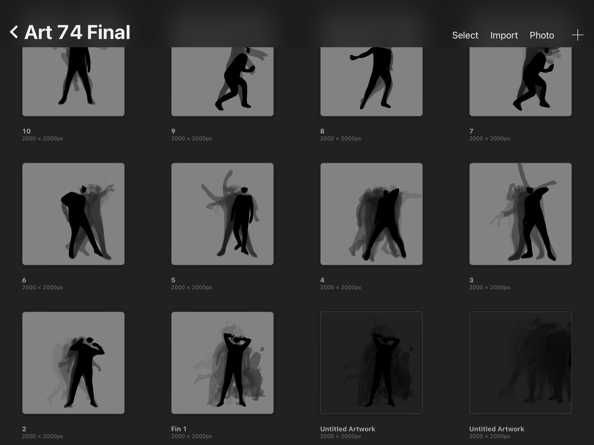
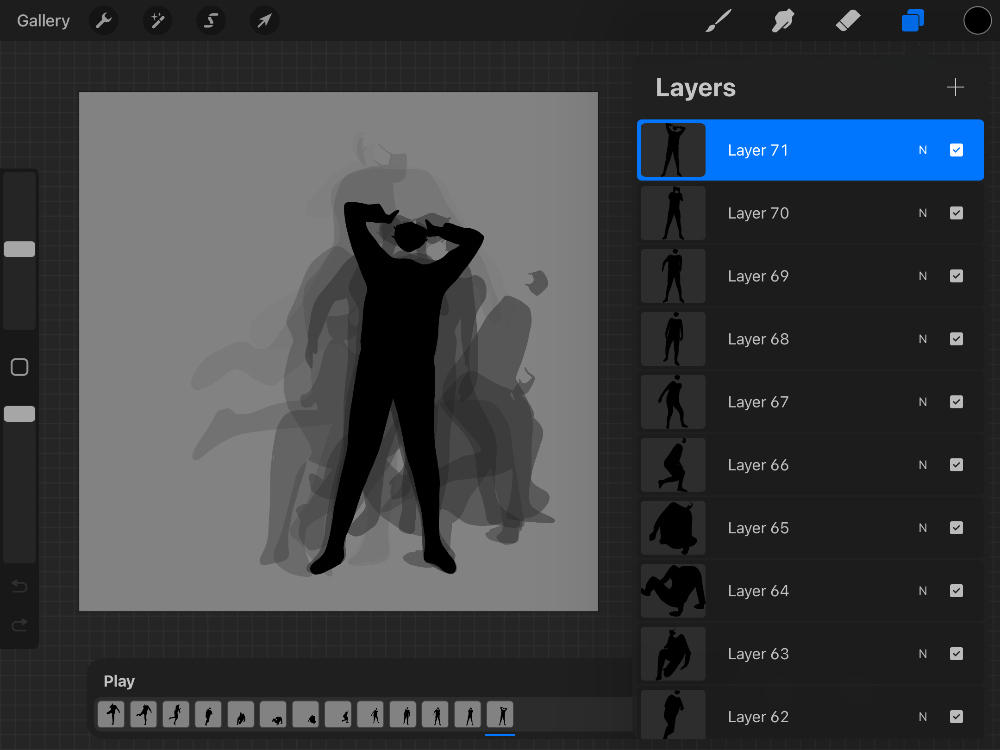

Animation
I decided to create a final project based around animation, which I often do in my free time. This project is the longest and involved the most movement that I have ever had to draw. My goal was to create a short animation of a dance that expresses the difficult times everyone has been experiencing throughout this pandemic and show any feelings or emotions we may have felt like loneliness, helplessness, and loss, that would then transition to fighting back, using our voices, and pushing through.
Below, I have some progress images and a link to the final product. Compared to the video reference, I adjusted the speed and movement of the animation so it is not the same. It is a very rough animation, because creating smooth transitions with only one person would take quite some time. A full minute and a half animation with details and backgrounds could take a team of 5-10 people around 6-8 weeks. An estimate of animating a smooth scene with one person could take around 3 months, which was way more time than I had for creating my project. In total, I took over 10 hours to draw this animation along with days and hours worth of breaks in between. In all I had created a minute and seventeen long animation with about 385 frames, at a very low frame rate of 5.

